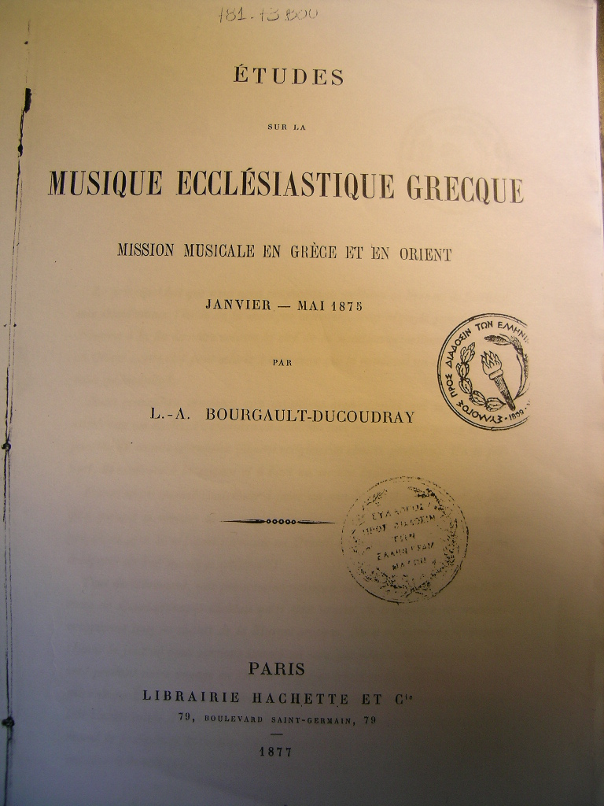

Ο Σωτήριος Δεσπότης είναι μουσικολόγος και συνθέτης. Μεταξύ των δημοσιεύσεών του
υποστηρίζει το μουσικό έργο του Σίμωνος Καρά όπως φαίνεται από το άρθρο του πιό
κάτω και από τη συμμετοχή του στο "μουσικολογικό ζήτημα" [
htm]
(at cmkon.org).
Sotirios Despotis is a musicologist and composer. He is a supporter of the theoretical
work of Simon Karas as can be seen by his article below and by his contribution
to the "musicological issue" debate [
htm]
(at cmkon.org).
Άρθρο "Ερμηνευτικές Προσεγγίσεις στο Μουσικό Υλικό της Ψαλτικής Τέχνης" / Article "A Hermeneutical Approach to the Musical Material of the Psaltic Art"
Ερμηνευτικές Προσεγγίσεις στο Μουσικό Υλικό της Ψαλτικής Τέχνης - περιοδικό "Γρηγόριος
Παλαμάς", τεύχος 818, σσ. 417-428, Θεσσαλονίκη 2007 / A Hermeneutical Approach to the Musical Material of the Psaltic Art, Gregorios Palamas magazine, issue 818, Thessaloniki, 2007, pp 417-428 [
pdf, 2.4 Mb]
Το άρθρο προσφέρθηκε από τον ίδιο το συγγραφέα / Offered by the author.
Άρθρο "Η Παραδοσιακή Κερκυραϊκή Ψαλτική Τέχνη" / Article "The Psaltic Tradition of the Island of Corfu"
Η Παραδοσιακή Κερκυραϊκή Ψαλτική Τέχνη - περιοδικό "Γρηγόριος
Παλαμάς", τεύχος 812, σσ. 1029-1044, Θεσσαλονίκη 2006 / The Psaltic Tradition of the Island of Corfu, Gregorios Palamas magazine, issue 812, Thessaloniki, 2006, pp 1029-1044 [
pdf, 2.8 Mb]
Το άρθρο προσφέρθηκε από τον ίδιο το συγγραφέα / Offered by the author.
Άρθρο "Η ισοκρατηματική πρακτική της Βυζαντινής Μουσικής" / Article "The practice of isokratema in Byzantine Music"
Η ισοκρατηματική πρακτική της Βυζαντινής Μουσικής - Ιστορική και μορφολογική προσέγγιση, περιοδικό "Γρηγόριος
Παλαμάς", τεύχος 816, Μάρτιος - Απρίλιος 2007 / The practice of isokratema in Byzantine Music:
A morphological approach (in Gregorios Palamas magazine, issue 816, March-April
2007) [
pdf, 6.5 Mb]
Το άρθρο προσφέρθηκε από τον ίδιο το συγγραφέα / Offered by the author.
Άρθρο "Εξ Εσπερίας η δικαίωση του Σίμωνος Καρά" / Article "The justification of Simon Karas' work comes from the West"
Εξ Εσπερίας η δικαίωση του Σίμωνος Καρά: Οι καταγραφές της ψαλτικής παράδοσης από
τον Γάλλο Ντικουντριέ, το 1877, συμφωνούν με ό,τι υποστήριξε αργότερα ο Ελληνας
Δημοσιεύτηκε στην εφημερίδα Καθημερινή στις 10-06-07 [
html]. Προσφέρθηκε στο Αναλόγιον
από τον ίδιο το συγγραφέα.
Συχνά, τα αποτελέσματα νέων επιστημονικών ερευνών έρχονται να επαληθεύσουν θέσεις
και πορίσματα παλαιοτέρων ερευνητών. Χαρακτηριστική περίπτωση είναι τα αποτελέσματα
ετήσιας έρευνας που πραγματοποιήσαμε με αφορμή τις μουσικές πληροφορίες που καταγράφονται
στο βιβλίο του Louis Albert Bourgault Ducoudray, Εtudes sur la musique ecclesiastique
grecque: Μission musicale en Grece et en Orient. Janvier-Mai 1875, με έκδοση του
έργου στο Παρίσι το 1877. Τα αποτελέσματα της έρευνάς μας σχετικά με τη λειτουργία
των έλξεων καθώς και με αναλύσεις - ενέργειες σημαδοφώνων της νεοελληνικής ψαλτικής
τέχνης, ταυτίζονται με μουσικοθεωρητικές τοποθετήσεις που συναντούμε στο συγγραφικό
έργο του Σίμωνος Καρά (Λέπρεον Ηλείας 1903 - Αθήνα 1999), η ορθότητα των οποίων
για μια μεγάλη ομάδα ερευνητών και ερμηνευτών της ελληνικής ψαλτικής τέχνης, αμφισβητείται.
Ο Ducoudray, Γάλλος μουσικολόγος και συνθέτης, (Nantes 1840 - Vernouillet 1910),
μελέτησε την ελληνική εκκλησιαστική μουσική παράδοση ταξιδεύοντας και διαμένοντας
στην Αθήνα, στη Σμύρνη, στην Κωνσταντινούπολη και στη Χάλκη από τον Ιανουάριο μέχρι
και τον Μάιο του 1875. Στην Αθήνα κοντά στον Θεοχάρη Γερογιάννη μελέτησε το σημειογραφικό
σύστημα της νεοελληνικής ψαλτικής τέχνης. Μια σειρά όμως αναπάντητων ερωτημάτων
οδήγησαν τον Γάλλο μουσικολόγο στη Σμύρνη όπου και γνώρισε τον Πρωτοψάλτη Μισαήλ
Μισαηλίδη καθώς και τον Νικόλαο Πρωτοψάλτη. Μετά τη Σμύρνη ο Ducoudray διέμεινε
στην Κωνσταντινούπολη και στη Χάλκη. Εκεί συνάντησε τον αρχιμανδρίτη Γερμανό Αφθονίδη,
ο οποίος υπήρξε ο πρόεδρος της Μουσικής Επιτροπής του 1881, τον Γεώργιο Βιολάκη,
ο οποίος από τον Νοέμβριο του 1875 ανέλαβε τα καθήκοντα του Αρχοντα Πρωτοψάλτου
της Μεγάλης του Χριστού Εκκλησίας, τον Δημήτριο Πασπαλλή και τον Ηλία Τανταλίδη.

(front page from Ducoudray's book, offered by Sotirios Despotis, click for original
size)
Η πενταγραμμική σημειογραφία
Το αξιοσημείωτο γεγονός βρίσκεται στο ότι ο Γάλλος μουσικολόγος κατέγραψε πληροφορίες
από τις συζητήσεις που είχε με τους προαναφερθέντες και κυρίως με τον Γερμανό Αφθονίδη,
στο προαναφερθέν έργο που εξέδωσε στο Παρίσι το 1877. Κατέγραψε μάλιστα στην πενταγραμμική
σημειογραφία εκκλησιαστικά μέλη διασώζοντας με τον τρόπο αυτό χαρακτηριστικά παραδείγματα
από την ψαλτική πρακτική της περιόδου. Ο προσδιοριστικός χαρακτήρας της πενταγραμμικής
σημειογραφίας που χρησιμοποιείται από τον Ducoudray, για την καταγραφή των εκκλησιαστικών
μελών, μας παρέχει τη δυνατότητα να προσεγγίσουμε με μεγάλη ακρίβεια όλες σχεδόν
τις μουσικές πληροφορίες - παραμέτρους που καταγράφονται στα 29 εκκλησιαστικά μέλη
που περιλαμβάνει το πόνημα του Γάλλου ερευνητή και να οδηγηθούμε σε σαφή συμπεράσματα.
Η ανάλυση των 29 εκκλησιαστικών μελών καθώς και οι πληροφορίες πoυ σχετίζονται με
μουσικοθεωρητικά ζητήματα περί οκταηχίας και έλξεων που καταγράφονται στη συγκεκριμμένη
μελέτη, μας παρέχουν τη δυνατότητα να προσεγγίσουμε σημαντικότατα στοιχεία που συνδέονται
άμεσα: α) με ενέργειες - αναλύσεις σημαδοφώνων της ελληνικής ψαλτικής τέχνης (περισσότερα
βλέπε στο: Sotiris K. Despotis, Bemerkungen zu den Aufzeichnungen griechischer kirchlicher
Melodien von Louis Albert Bourgault Ducoudray, ανακοίνωση στο διεθνές μουσικολογικό
συνέδριο με τίτλο: Theorie und Geschichte der Monodie, 7-10/9/2006 στη Βιέννη, υπό
έκδοση), β) το ρόλο που διαδραματίζουν οι έλξεις σε κάθε ήχο της βυζαντινής εκκλησιαστικής
μουσικής παράδοσης (περισσότερα βλέπε στο: Σωτήριος Κ. Δεσπότης, Μορφολογικές παρατηρήσεις
περί οκταηχίας και έλξεων σε καταγραφές εκκλησιαστικών μελών του Louis Albert Bourgault
Ducoudray, ανακοίνωση στο Γ΄ διεθνές μουσικολογικό και ψαλτικό συνέδριο με τίτλο:
Η Οκταηχία, 17-21/10/2006, στην Αθήνα, υπό έκδοση) και γ) τη χρονική αγωγή βάσει
της οποίας εψάλησαν τα εκκλησιαστικά μέλη που περιλαμβάνει ο Ducoudray στη μελέτη
του.
50 χρόνια έρευνας
Τα συμπεράσματα στα οποία οδηγηθήκαμε από τις αναλύσεις που πραγματοποιήσαμε, ταυτίζονται
με μουσικοθεωρητικές θέσεις στις οποίες καταλήγει και ο Σίμων Καράς, μετά περίπου
μια ολόκληρη πεντηκονταετία έρευνας στη χειρόγραφη και στην προφορική παράδοση της
εκκλησιαστικής μας παραδόσεως και έρχονται να πιστοποιήσουν για μια ακόμη φορά την
ορθότητα των γραφομένων του Καρά, δίνοντας απαντήσεις σε όσους έθεταν υπό αμφισβήτηση
μεγάλο τμήμα από τα γραφόμενά του.
Αντιπαραβάλλοντας τις καταγραφές στην πενταγραμμική σημειογραφία που περιλαμβάνει
στη μελέτη του ο Γάλλος μουσικολόγος με τα αντίστοιχα μέλη, όπως αυτά παρουσιάζονται
κυρίως στο Αναστασιματάριο του Πέτρου Εφεσίου, αποκωδικοποιούμε ενέργειες σημαδοφώνων
της νεοελληνικής ψαλτικής τέχνης. Μελετώντας παράλληλα το θεωρητικό έργο του Σίμωνος
Καρά συναντάμε με αναλυτικότατο τρόπο τις ίδιες ερμηνευτικές προσεγγίσεις, στοιχείο
το οποίο έρχεται όχι μόνο να επαληθεύσει τις θεωρητικές απόψεις του Καρά, αλλά και
να τονίσει την ιστορική συνέχεια που χαρακτηρίζει τη νεοελληνική εκκλησιαστική μουσική
παράδοση.
Ειδικότερα, το θεωρητικό ζήτημα που σχετίζεται με την ύπαρξη ή μη των μελωδικών
έλξεων στα εκκλησιαστικά μέλη, φαίνεται να βρίσκει απάντηση μέσα από τις καταγραφές
του Γάλλου μουσικολόγου, ο οποίος σε κάθε μέλος καταγράφει με ειδικά σύμβολα τις
έλξεις, πιστοποιώντας με τον τρόπο αυτό την ύπαρξή τους στα εκκλησιαστικά μέλη της
ελληνικής ψαλτικής τέχνης. Το αξιοσημείωτο βέβαια του γεγονότος είναι ότι οι έλξεις
που καταγράφονται σε κάθε ήχο από τον Ducoudray περιλαμβάνονται με συνέπεια και
ακρίβεια και στο θεωρητικό έργο του Σίμωνoς Καρά, ο οποίος απ’ ό,τι φαίνεται κατάφερε
να προσεγγίσει ένα τόσο δύσκολο θεωρητικό ζήτημα με μεγάλη ακρίβεια. Και ας μη λησμονούμε
ότι ο πρόεδρος της Μουσικής Επιτροπής του 1881, ο αρχιμανδρίτης Γερμανός Αφθονίδης,
ήταν κυρίως εκείνος που έδωσε τις θεωρητικές πληροφορίες περί έλξεων στον Ducoudray.
Η θεωρητική διδασκαλία του Σίμωνος Καρά, όπως αυτή παρουσιάζεται στο δίτομο θεωρητικό
του έργο με τίτλο: Μέθοδος της Ελληνικής Μουσικής (Αθήναι 1982), καθώς και οι μελέτες
του: Η ορθή ερμηνεία και μεταγραφή των βυζαντινών μουσικών χειρογράφων (Αθήναι 1990)
και Η βυζαντινή μουσική παλαιογραφική έρευνα εν Ελλάδι (Αθήναι 1976), έρχονται να
αποδείξουν τους λόγους για τους οποίους ένα σύνολο μουσικολόγων - ερευνητών της
Δυτικής Ευρώπης αλλά και της χώρας μας οδηγήθηκαν σε λανθασμένα συμπεράσματα, όσον
αφορά τον τρόπο με τον οποίο πραγματοποίησαν τις μεταγραφές - εξηγήσεις ελληνικών
εκκλησιαστικών μελωδιών στο πεντάγραμμο. Κατά συνέπεια αποκαθιστούν την πολυετή
λανθασμένη εικόνα που είχαν οι δυτικοί μουσικολόγοι για τα μελωδικά χαρακτηριστικά
της βυζαντινής, κυρίως, εκκλησιαστικής μουσικής παραδόσεως.
Οι αλλαγές στην ψαλτική τέχνη
Ο Σίμων Καράς βασιζόμενος σε σειρά μουσικοθεωρητικών συγγραμμάτων και αντλώντας
έναν τεράστιο πλούτο μορφολογικών πληροφοριών από τη βυζαντινή, μεταβυζαντινή και
νεοελληνική μουσική χειρόγραφη παράδοση, απέδειξε περίτρανα ότι η τελευταία αλλαγή
του σημειογραφικού συστήματος της ελληνικής ψαλτικής τέχνης που πραγματοποιήθηκε
το 1814 αποτελεί, όπως χαρακτηριστικά ανέφερε και ο καθηγητής Γρηγόριος Στάθης,
«γέφυρα μετάγουσα και προς τα πίσω, προς τη μία, ενιαία και αδιάκοπη ψαλτική παράδοση».
Η ελληνική ψαλτική τέχνη εξελίσσεται, όπως κάθε παραδοσιακή μουσική τέχνη, διατηρώντας
όμως σε ολόκληρη την ιστορία της τα βασικά της μορφολογικά γνωρίσματα, τα οποία
δεν χάθηκαν με τη δεύτερη Αλωση της Κωνσταντινουπόλεως όπως πρέσβευε μέχρι πριν
από λίγες δεκαετίες μια ομάδα μουσικολόγων της Δύσης αλλά και της χώρας μας.
Η μεγαλύτερη ίσως προσφορά του αειμνήστου Δασκάλου, στο χώρο της εκκλησιαστικής
μας μουσικής παραδόσεως, είναι το δίτομο θεωρητικό του εγχειρίδιο, το οποίο κατέχει
επάξια τη σημαντικότερη θέση στο μουσικοθεωρητικό χώρο της νεοελληνικής ψαλτικής
τέχνης και επιστήμης, ειδικότερα στο δεύτερο μισό του 20ού αιώνα. Η σπουδαιότητα
του πονήματος έγκειται: α) στον τρόπο με τον οποίο αναλύεται το θεωρητικό σύστημα
της βυζαντινής οκταήχου, παρουσιάζοντας για κάθε ήχο τη μορφολογική και ιστορική
του ταυτότητα και β) στο γεγονός ότι ο Σίμων Καράς συμπεριέλαβε στο θεωρητικό του
ολόκληρο κεφάλαιο για τη μουσική έκφραση.
Στις ημέρες μας το θεωρητικό έργο του αειμνήστου Δασκάλου, ειδικότερα μετά την ίδρυση
των τεσσάρων ελληνικών πανεπιστημιακών μουσικών τμημάτων, γνωρίζει μεγάλη διάδοση
χάρη στους μαθητές του Σίμωνος Καρά. Aνάμεσά τους ξεχωριστή θέση κατέχει ο Πρωτοψάλτης
κ. Λυκούργος Α. Αγγελόπουλος, ο οποίος τα τελευταία 25 χρόνια έχοντας ως σημείο
αναφοράς τη θεωρητική διδασκαλία του αειμνήστου Δασκάλου του αναδεικνύει πλήθος
αξιόλογων ερευνητών και ιεροψαλτών. Οι πολυετείς αυτοί μόχθοι των μαθητών του Σίμωνος
Καρά αποτελούν ένα διαρκές μνημόσυνο για τα οκτώ χρόνια απουσίας του από την ελληνική
μουσική παράδοση.
{kind=link}